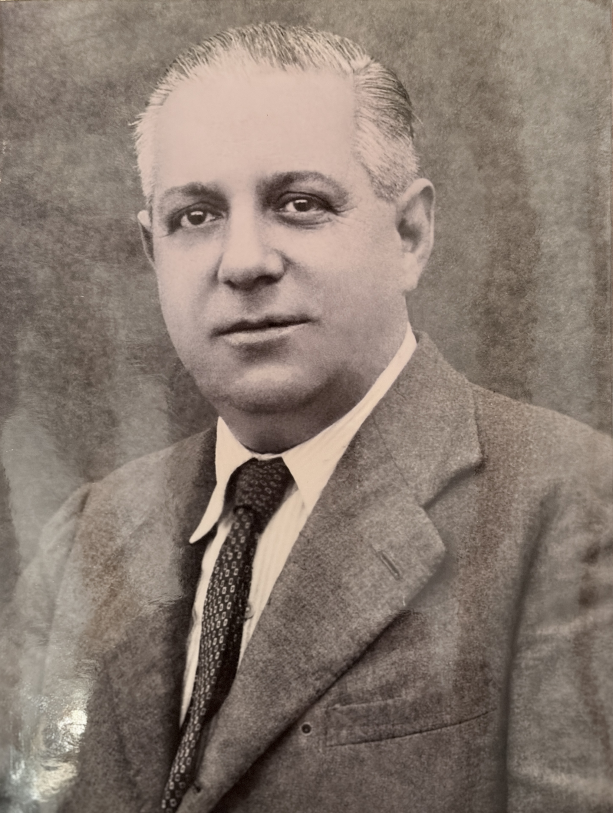
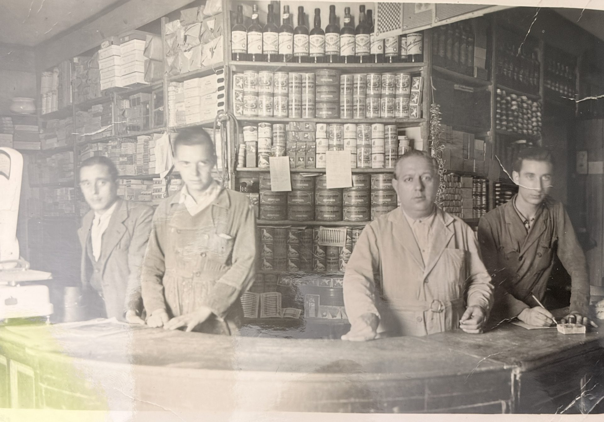
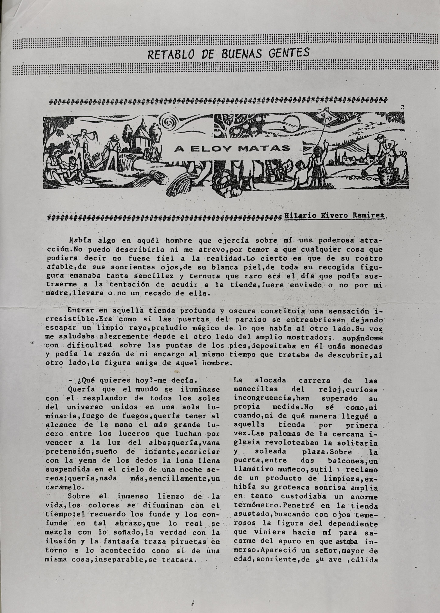
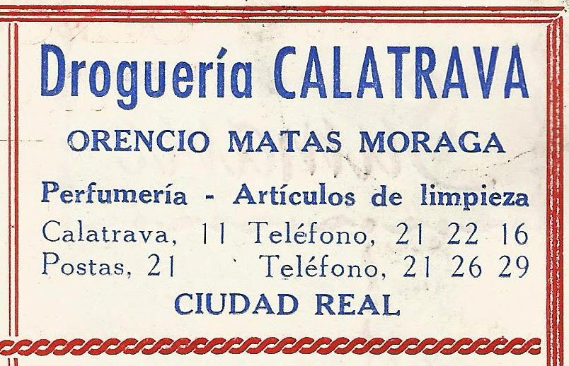
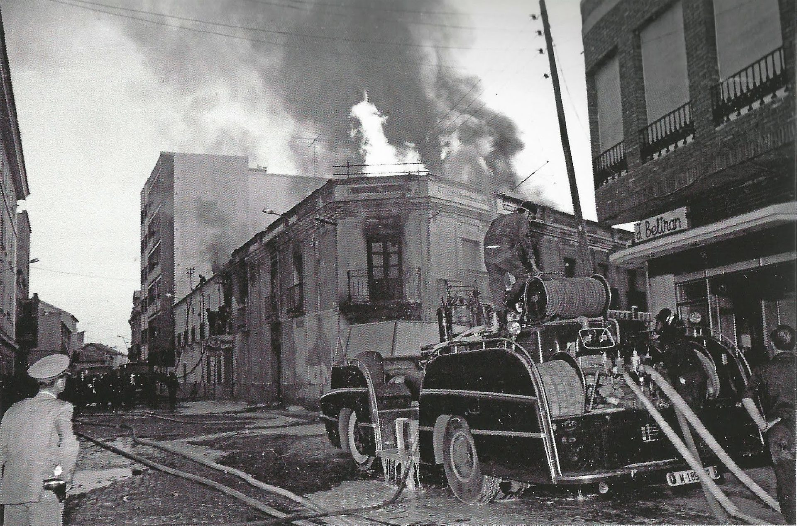
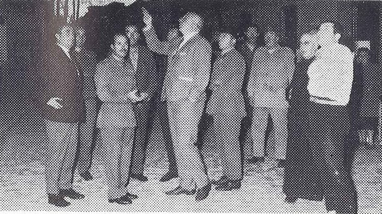
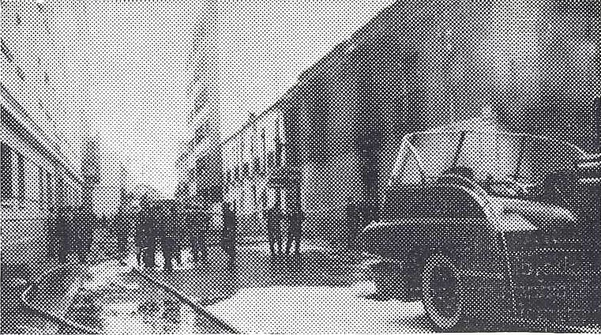
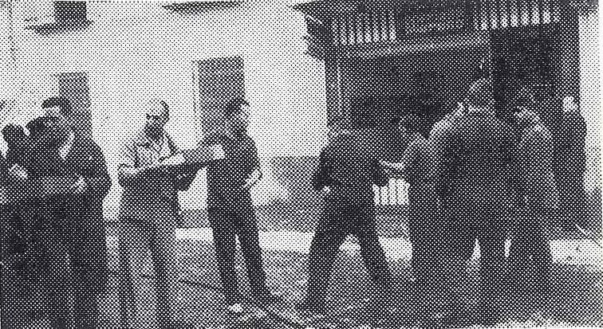

A Eloy Matas
La trayectoria de Orencio Matas y Hnos encuentra su raíz en la figura de Eloy Matas, símbolo del oficio comercial, la palabra dada y el trabajo paciente que permitió levantar una casa de confianza desde Ciudad Real.
Trayectoria centenaria
Desde 1919 • Ciudad RealLa historia de Orencio Matas y Hnos nace del impulso emprendedor del patriarca D. Eloy Matas, asentado en Ciudad Real en 1919, y avanza durante más de cien años como una crónica familiar de oficio, adaptación y servicio profesional.
Archivo familiar recuperado
Una selección de documentos históricos que refuerzan el origen humano de la firma, la cultura comercial de la familia Matas y el punto de inflexión que marcó su evolución empresarial.

La trayectoria de Orencio Matas y Hnos encuentra su raíz en la figura de Eloy Matas, símbolo del oficio comercial, la palabra dada y el trabajo paciente que permitió levantar una casa de confianza desde Ciudad Real.

Esta imagen conserva el ambiente del comercio familiar en su etapa tradicional. En ella aparecen retratados, de izquierda a derecha, Manuel Matas Moraga, Francisco Matas Moraga, Eloy Matas (fundador) y Eloy Matas Moraga. Falta en la fotografía Orencio Matas Moraga, fundador principal y persona por quien toma nombre la empresa actual, Orencio Matas y Hermanos, ya que en ese preciso momento se encontraba realizando el servicio militar.

La carta de reconocimiento dedicada a Eloy Matas deja constancia de sus virtudes como profesional y comercial intachable, una forma de entender el negocio basada en la honestidad, la cercanía y el cumplimiento.
El diario provincial Lanza recogió la noticia del histórico incendio ocurrido en las instalaciones de la Calle Calatrava, publicado el 1 de septiembre de 1966. Este documento ayuda a comprender la magnitud del suceso y la posterior transformación estratégica de la empresa.

El equipo del almacén, liderado por Orencio Matas Moraga, celebrando la boda de su hijo Ángel Matas Rubio. En la fotografía aparecen también sus hermanos Manuel Matas Moraga y Eloy Matas Moraga, junto a Ángela Matas Rubio y el resto de compañeros del almacén de aquella época.
1919 - 1966
La primera etapa de la firma estuvo marcada por el pulso comercial del mostrador de madera noble en la Plaza de la Constitución de Miguelturra y por el posterior traslado al número 11 de la Calle Calatrava, esquina con Calle Audiencia, donde el establecimiento consolidó su identidad bajo el nombre de Droguería Calatrava.
Allí, los cuatro hermanos Matas Moraga, Orencio, Eloy, Manuel y Francisco, gobernaron coordinadamente una casa de comercio donde el conocimiento del producto era tan importante como la confianza con el cliente.
La liturgia diaria estaba hecha de balanzas de cruz, pigmentos minerales puros fraccionados con precisión, fórmulas transmitidas por oficio y aquellas papeletas a peseta que acercaban el gran consumo a hogares, talleres, agricultores y pequeños negocios de Ciudad Real.

El Mostrador de la Memoria
Calle de las Cañas
La evolución del negocio exigió separar con criterio la venta de mostrador y la operativa de almacenaje. La Calle de las Cañas se convirtió en un verdadero pulmón logístico, conectado con la Estación de Ferrocarril y con una red de transporte que forma parte de la memoria industrial de la provincia.
Camiones Pegaso “Mofletes”, Barreiros o Ebro movían bidones de 200 litros, sacos de arpillera de 50 kilos y damajuanas de vidrio protegidas por mimbre, en una logística física, exigente y profundamente artesanal.
31 de agosto de 1966
La madrugada del 31 de agosto de 1966 marcó un antes y un después. Un incendio fortuito destruyó la tienda minorista de la Calle Calatrava 11, esquina con Calle Audiencia, y puso fin a una etapa decisiva de la historia familiar.
La respuesta de la saga Matas transformó la catástrofe en estrategia. El cierre del menudeo abrió paso a una refundación orientada al canal profesional: Orencio Matas y Hermanos, S.L. dio el salto al sector industrial y consolidó una alianza clave como concesionario oficial exclusivo de Pinturas Glasurit, integrada en el universo BASF.
A partir de esa metamorfosis, la compañía incorporó sistemas tintométricos computarizados y empezó a construir una posición técnica especializada en pintura, carrocería y suministro profesional.




Actualidad 2026
Hoy en día, la tercera generación familiar, liderada por Ángel Matas Rubio y Ángela Matas Rubio, encabeza una transición orientada a la excelencia en el servicio al Sector Profesional desde sus instalaciones centrales. La sede actual representa un salto cualitativo en la modernización de la firma: espacios amplios con gran capacidad de altura para el almacenamiento, accesos adaptados para el transporte pesado y sistemas de seguridad industrial de última generación con cubetos de retención estancos y sectorización técnica contra incendios. Una infraestructura diseñada bajo su dirección no solo para competir a gran escala, sino para garantizar un entorno de trabajo seguro y un suministro inmediato a toda la región.
Matriz de tiempo
Asentamiento fiscal primigenio por D. Eloy Matas en Ciudad Real.
Primer mostrador comercial en la Plaza de la Constitución de Miguelturra y consolidación del oficio droguerista tradicional.
Época dorada de Droguería Calatrava y apertura del pulmón logístico en la Calle de las Cañas.
Siniestro químico y repliegue estratégico total hacia el canal mayorista.
Constitución de Orencio Matas y Hermanos, S.L. y alianza exclusiva con Glasurit.
Alta logística especializada en el Sector Profesional en la Avenida Alfred Nobel.